Show other papers
A hyperbolic cell cycle law for early embryonic developmental timing
Authors: Adrián Aguirre-Tamaral, Johanna Royer, Magdalena Schindler-Johnson, Jun-Ru Lee, Daniel R. Amor, Nicoletta I. Petridou, Bernat Corominas-Murtra
Type: both · Category: statistical mechanics · PDF: https://arxiv.org/pdf/2605.13234v1
Analysis basis: full PDF text, analyzed in chunks
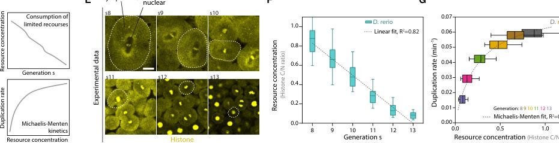
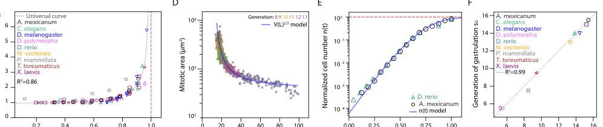
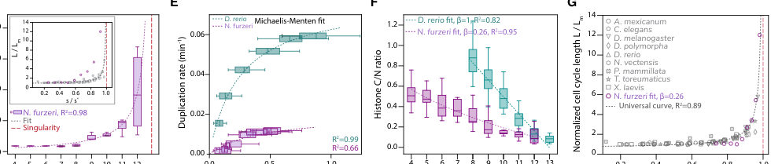
Summary. This paper proposes that the universal slowing of cell division in early embryos is a physical consequence of depleting maternal resources. By applying Michaelis-Menten kinetics to resource consumption, the authors show that a single hyperbolic law can predict developmental milestones like gastrulation across widely different species.
Why it may be interesting. not directly relevant
Detailed structure
Main problem. Understanding the universal mechanism behind the slowing down of cell duplication speed (cell cycle length elongation) across diverse metazoan species and determining if this is driven by fundamental biochemical constraints.
Main result. The study identifies a universal hyperbolic law for cell cycle length driven by the depletion of finite maternal resources, which also predicts the timing of gastrulation across various phyla.
Method. The authors combine mathematical modeling using Michaelis-Menten kinetics with comparative analysis of existing cell cycle data and live imaging of zebrafish embryos to track histone distribution.
Model / system. The system consists of early metazoan embryos undergoing reductive cleavage. The model uses a biochemical framework where cell duplication rates depend on the concentration of a limiting maternal substrate following Michaelis-Menten-like kinetics.
Key observables. Cell Cycle Length (CCL), cell number evolution, cell volume, and the cytoplasmic-to-nuclear (C/N) ratio of histone intensity.
Important parameters / regimes. Maximum reaction rate (uM), Michaelis-Menten constant (Km), initial resource concentration (c0), and the singularity generation (s*) where resources are exhausted.
Assumptions / limitations. The model assumes cell duplication rates follow Michaelis-Menten kinetics and that resource depletion can be approximated as a smooth, monotonic function of the generation number.
Figures summary. Figures show the schematic of embryogenesis, the collapse of multi-species CCL data onto a single universal curve, zebrafish histone distribution and decay, and the prediction of gastrulation timing and cell volume changes.
Paper structure. The paper introduces the problem of cell cycle slowing, presents a mathematical model of resource-limited kinetics, demonstrates the universal scaling across species, validates the model via zebrafish experiments (resource reduction and ZGA inhibition), and discusses the implications for developmental timing and heterochrony.
Abstract
Across metazoans, early embryos exhibit a strikingly conserved slowing down of their cell duplication speed, despite widely varying developmental paces and underlying molecular mechanisms. Here we show that this common behavior arises because early development unfolds along a biochemical rather than a chronological timescale, resulting from the coupling of finite maternal resource consumption to the Michaelis-Menten-like kinetics governing the rates of the biochemical reactions involved in cell duplication. This leads to a hyperbolic growth of the Cell Cycle Length (CCL), approaching a mathematical singularity, which would correspond to developmental arrest. Data from a wide range of organisms -- cnidarians, nematodes, arthropods, molluscs, echinoderms, tunicates, amphibians, and fish -- collapse on a single curve, quantitatively capturing not only a universal CCL dynamical behaviour, but also key hallmarks of early metazoan development, including cell-number temporal evolution, the dependency of CCL on cell size, and, remarkably, gastrulation timing at the predicted singularity. Crucially, experimental modulation of resource availability and consumption rates validate the model and further demonstrate that a source of heterochrony in early development is an altered biochemical timescale of resource depletion. Overall, this work reveals resource consumption rates as a fundamental mechanism driving developmental timing in early embryogenesis across species.
Backdoor Threats in Variational Quantum Circuits: Taxonomy, Attacks, and Defenses
Authors: Lei Jiang, Fan Chen
Type: theory · Category: quantum information and computing · PDF: https://arxiv.org/pdf/2605.13796v1
Analysis basis: full PDF text, analyzed in chunks
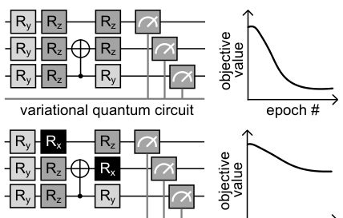
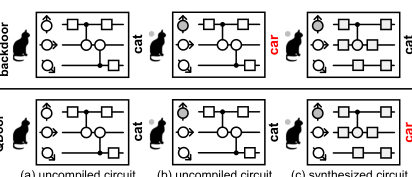
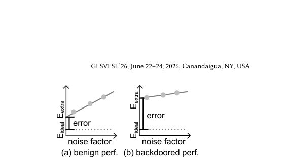
Summary. This paper surveys the evolving landscape of backdoor attacks in variational quantum computing, highlighting how new 'quantum-native' threats exploit hardware noise and compilers. It emphasizes that as quantum algorithms move toward deployment, developing robust, quantum-aware defenses is critical to prevent malicious manipulation of computational results.
Why it may be interesting. not directly relevant
Detailed structure
Main problem. The paper addresses the security vulnerabilities of Variational Quantum Algorithms (VQAs) to backdoor attacks, where malicious behaviors are embedded into circuits and activated by specific triggers.
Main result. The authors provide a comprehensive taxonomy of attacks (data-poisoning, compiler-level, and quantum-native) and demonstrate that current defenses are largely ineffective against sophisticated, hardware-dependent threats.
Method. The paper performs a systematic survey and formalization of threat models, categorizing attacks by attacker capabilities and mechanisms, and reviewing existing detection and defense strategies.
Model / system. The study focuses on Variational Quantum Circuits (VQCs) used in NISQ-era algorithms, including Quantum Neural Networks (QNNs), Variational Quantum Eigensolvers (VQE), and the Quantum Approximate Optimization Algorithm (QAOA).
Key observables. Attack Success Rate (ASR), benign performance (accuracy/energy), measurement output distributions, and expectation values.
Important parameters / regimes. Poisoning rate, hyperparameter lambda (trade-off between benign and malicious tasks), hardware noise profiles, and qubit connectivity.
Assumptions / limitations. Assumes adversaries may have control over training data, compilation toolchains, or hardware-specific configurations like noise profiles.
Figures summary. Figure 1 shows parameter perturbations triggering optimization failure; Figure 2 illustrates the workflow of a backdoor attack; Figure 3 depicts the QDoor compiler-level mechanism; Figure 4 demonstrates how ZNE-based attacks bias error mitigation.
Paper structure. The paper introduces the security problem, provides a formal taxonomy of attack types (data, compiler, and quantum-native), reviews existing literature on attack strategies and metrics, analyzes the limitations of current defense/detection methods, and concludes with future research directions.
Abstract
Variational quantum algorithms (VQAs) are a central paradigm for noisy intermediate-scale (NISQ) quantum computing, yet their reliance on predesigned and pretrained variational quantum circuits (VQCs) introduces critical security vulnerabilities, particularly backdoor attacks. These attacks embed hidden malicious behaviors that remain dormant under normal conditions but are activated by specific triggers, leading to adversarial outcomes such as incorrect predictions or manipulated objective values. This paper presents a survey of backdoor attacks in VQCs, covering data-poisoning, compiler-level, and quantum-native mechanisms. We formalize key terminology and threat models, and review existing attack strategies along with their empirical characteristics. We also analyze current detection and defense approaches, highlighting their limitations, especially against quantum-specific threats. By synthesizing recent advances, this survey outlines the evolving security landscape of VQCs and identifies key challenges and future directions for developing robust, quantum-aware defenses in hybrid quantum-classical systems.
Beyond Explained Variance: A Cautionary Tale of PCA
Authors: Gionni Marchetti
Type: both · Category: disordered systems and neural networks · PDF: https://arxiv.org/pdf/2605.13520v1
Analysis basis: full PDF text, analyzed in chunks
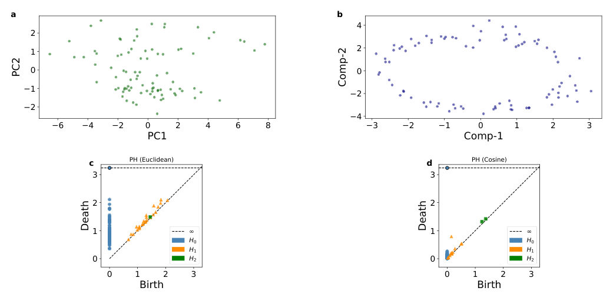
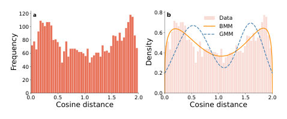
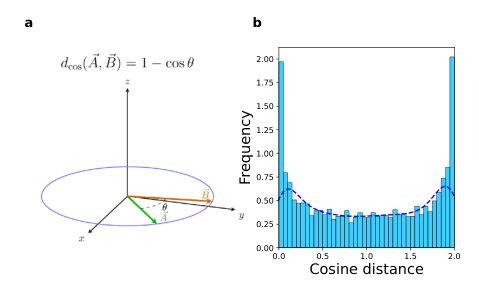
Summary. This paper shows that standard PCA can provide a misleading view of high-dimensional data by suggesting clusters where none exist. By using topological data analysis and cosine distance, the authors reveal an underlying circular manifold in a biological dataset that PCA failed to detect.
Why it may be interesting. not directly relevant
Detailed structure
Main problem. The paper investigates the failure of Principal Component Analysis (PCA) to accurately represent nonlinear, low-dimensional manifolds, specifically how high explained variance can mask true topological structures.
Main result. The authors demonstrate that while PCA suggests false clustering in a fossil teeth dataset, t-SNE and persistent homology using cosine distance reveal a genuine 1D ring-like structure.
Method. The study employs dimensionality reduction (PCA, t-SNE), Topological Data Analysis (persistent homology), and statistical modeling (Beta Mixture Models) to compare Euclidean and Cosine distance metrics.
Model / system. The primary dataset consists of 88 samples of fossil teeth measurements from the early mammal Kuehneotherium. The authors also propose a generative probabilistic-geometric model where data points are sampled uniformly from a unit circle.
Key observables. Explained variance, intrinsic dimensionality, persistent homology barcodes (H0, H1, H2), and the distribution of pairwise cosine distances.
Important parameters / regimes. Perplexity in t-SNE, Gavish-Donoho optimal hard threshold, and the aspect ratio of the data matrix.
Assumptions / limitations. The paper critiques the PCA assumption that data lies near a linear subspace and notes the sensitivity of Euclidean distance to noise in high dimensions.
Figures summary. Figure 1 shows PCA and t-SNE scatterplots alongside persistent homology diagrams; Figure 3 presents histograms of cosine distances and model fits (BMM vs GMM); Supplemental figures include Andrews curves and reconstruction error plots.
Paper structure. The paper introduces the problem of PCA misinterpretation, analyzes a fossil dataset using various manifold learning and topological tools, proposes a generative circular model to validate findings, and concludes with a statistical comparison of distance metrics.
Abstract
We address shortcomings of principal component analysis (PCA) for visualizing high-dimensional data lying on a nonlinear low-dimensional manifold via two-dimensional scatterplots, focusing on a fossil teeth dataset from the early mammalian insectivore Kuehneotherium. While the PCA scatterplot reported by Jolliffe and Cadima (Philosophical Transactions of the Royal Society A, 2016) shows clustering in the region where PC2 < 0, our analysis based on t-SNE and persistent homology (PH) reveals a ring-like structure with no evident clustering and intrinsic dimensionality equal to one. We further propose a generative probabilistic-geometric model in which the data are sampled uniformly from a unit circle. Under this model, pairwise cosine distances follow an arcsine distribution, in qualitative agreement with the observed U-shaped distribution, thereby independently supporting the analysis based on tt t-SNE and persistent homology.
CO-MAP: A Reinforcement Learning Approach to the Qubit Allocation Problem
Authors: Ankit Kulshrestha, Xiaoyuan Liu
Type: theory · Category: quantum information and computing · PDF: https://arxiv.org/pdf/2605.13638v1
Analysis basis: full PDF text, analyzed in chunks
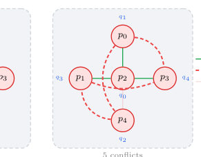
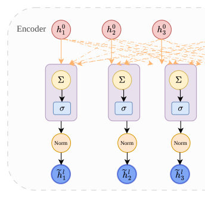
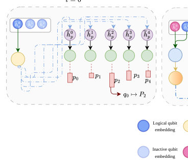
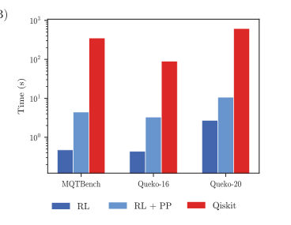
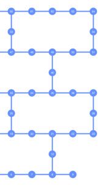
Summary. This paper proposes a reinforcement learning-based method called CO-MAP to optimize the mapping of logical qubits to physical qubits. By treating qubit allocation as a combinatorial optimization problem, the method significantly reduces the SWAP gate overhead compared to standard quantum compilers. This reduction is crucial for minimizing error and circuit depth in near-term quantum devices.
Why it may be interesting. not directly relevant
Detailed structure
Main problem. The qubit mapping (allocation) problem, which involves mapping abstract program qubits to physical qubits on a quantum device to minimize the number of SWAP gates required due to connectivity constraints.
Main result. The CO-MAP reinforcement learning approach achieves a 65-85% reduction in SWAP overhead compared to existing compilers like Qiskit SABRE, with post-processing further improving results by up to 99.8% on certain benchmarks.
Method. A reinforcement learning framework using a Graph Attention Network (GAT) encoder and a Pointer Attention decoder, combined with a local search-based post-processing algorithm.
Model / system. The study focuses on quantum hardware topologies, specifically an 8x8 grid and the IBM heavy-hex lattice, representing the physical connectivity (coupling graph) and the entanglement pattern of the circuit (program graph).
Key observables. SWAP gate count, circuit depth, and wall clock time.
Important parameters / regimes. Number of program qubits (n), number of physical qubits (N), and CNOT gate count.
Assumptions / limitations. Assumes the number of physical qubits is greater than or equal to the number of program qubits (N >= n) and assumes all device qubits are available with high uptime.
Figures summary. Figure 1 shows the qubit allocation process and mapping conflicts; Figure 2 illustrates the GAT encoder; Figure 3 shows the decoder process; Figure 5 displays the IBM heavy-hex lattice; Figure 7 compares SWAP counts across various circuit types.
Paper structure. The paper introduces the qubit mapping problem, presents the CO-MAP RL architecture (encoder-decoder), details the training and post-processing algorithms, evaluates performance on MQTBench and Queko datasets, and performs ablation studies on encoding strategies and compiler optimization levels.
Abstract
A quantum compiler is a critical piece in the quantum computing pipeline since it allows an abstract quantum circuit to be run on a physical quantum computer. One extremely important subproblem in quantum compilation is the generation of a logical to physical qubit mapping. Typically in quantum compilers this step is either implemented as a random or a heuristic based assignment that aims to minimize additional (SWAP) gate overhead in the quantum circuit. In this paper, we present an alternative approach to solving the qubit mapping problem. Specifically, we formulate the qubit mapping problem with a combinatorial optimization (CO) objective. We then present a method to find a solution to the CO problem by training a reinforcement learning (RL) policy. We also propose a local search based post-processing algorithm to further reduce the overhead. Our results show a dramatic improvement over conventional techniques in reducing the number of SWAPs. On different real world datasets like MQTBench and Queko circuits, our trained policy achieves a \textbf{65-85\%} reduction in SWAP overhead when compared to existing quantum compilers.
Conditional probability density functional theory for solids
Authors: Peiwei You, Ryan Pederson, Kieron Burke, E. K. U. Gross
Type: theory · Category: strongly correlated electrons · PDF: https://arxiv.org/pdf/2605.13226v1
Analysis basis: full PDF text, analyzed in chunks
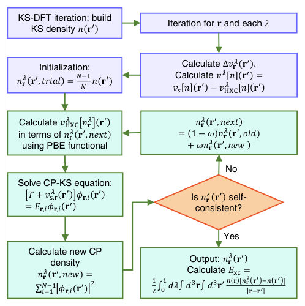
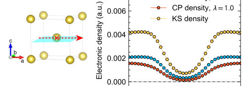
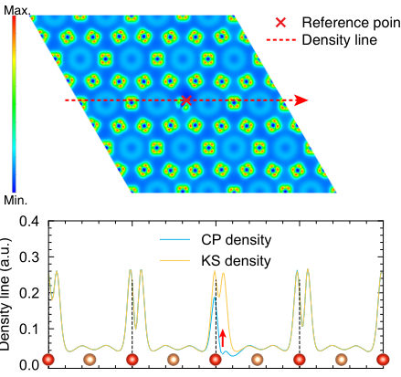
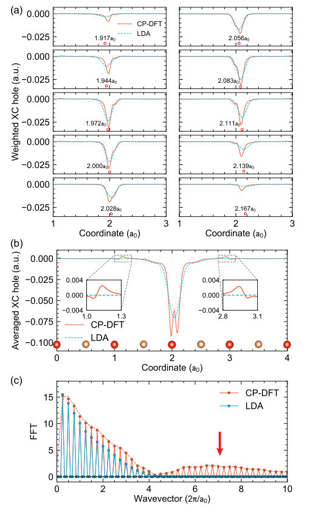
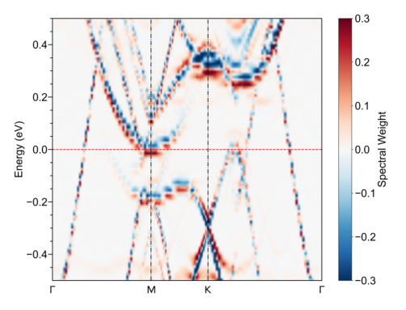
Summary. This paper introduces the application of Conditional Probability Density Functional Theory to periodic solids. It demonstrates that this method can resolve real-space electron correlation patterns, such as the structure of the exchange-correlation hole, which are invisible to standard DFT. This provides a new tool for studying the microscopic drivers of phenomena like charge density waves in strongly correlated materials.
Why it may be interesting. not directly relevant
Detailed structure
Main problem. Standard Kohn-Sham DFT relies on averaged density approximations that obscure the real-space, pointwise fine structure of electron correlations, such as the exchange-correlation hole.
Main result. The authors successfully extend Conditional Probability Density Functional Theory (CP-DFT) to periodic systems, demonstrating that it captures d-orbital correlations and enhanced charge density wave signals in the Kagome metal CsV3Sb5 that standard DFT misses.
Method. The CP-DFT framework uses an adiabatic connection formalism and self-consistent CP-Kohn-Sham equations to calculate pointwise pair densities and the exchange-correlation hole.
Model / system. The study applies the CP-DFT method to simple elemental crystals (He, Na, Si) for validation and to the Kagome metal CsV3Sb5 to investigate complex electronic correlations.
Key observables. Conditional probability density, exchange-correlation hole structure, pair density, and spectral weight of the van Hove singularity.
Important parameters / regimes. Scaled Coulomb repulsion strength (lambda), energy cutoff of 600 Ry, and a 4x4x1 supercell for CsV3Sb5.
Assumptions / limitations. Uses the PBE GGA functional for exchange-correlation potentials and employs a 'local blue electron' approximation for the CP correction potential.
Figures summary. Figure 1 shows the CP-DFT framework flowchart; Figure 5 displays the difference in spectral weight between the interacting and exchange-only limits along high-symmetry paths.
Paper structure. The paper introduces the CP-DFT framework, validates it using simple atomic and metallic systems (He, Na, Si), applies it to the complex Kagome metal CsV3Sb5, and concludes with implications for studying collective electronic phases.
Abstract
A recently developed approach, conditional probability density functional theory (CP-DFT), yields direct access to the exchange-correlation hole of a system, an important correlation function that is not available from any standard DFT calculation. We present the first results for extended materials with periodic boundary conditions. We demonstrate that CP-DFT works on weakly correlated materials (Na, Si). When applied to the prototypical Kagome material $CsV_3Sb_5$, we find $d$-orbital correlations that are not captured by standard DFT. Such distribution leads to a positive finding probability between two separated electrons and an enhanced charge density wave signal, suggesting a useful approach for strongly correlated systems.
Crossover and universality breaking in the dilute Baxter-Wu model
Authors: Dimitrios Mataragkas, Alexandros Vasilopoulos, Dong-Hee Kim, Nikolaos G. Fytas
Type: theory · Category: statistical mechanics · PDF: https://arxiv.org/pdf/2605.13238v1
Analysis basis: full PDF text, analyzed in chunks
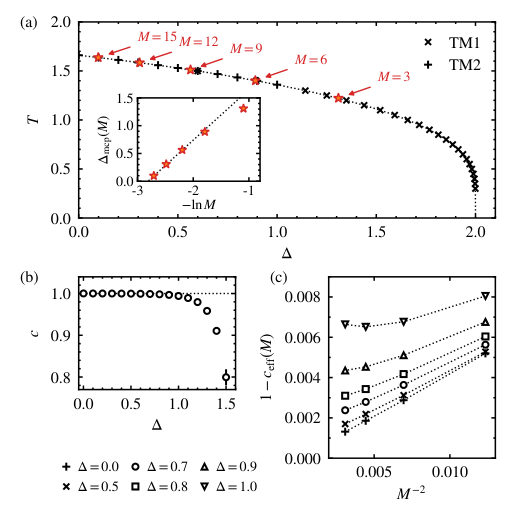
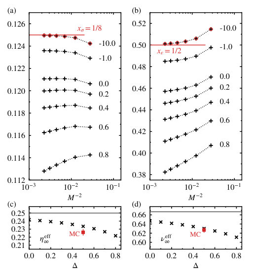
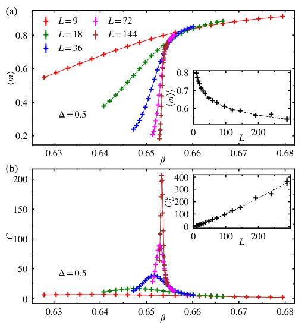
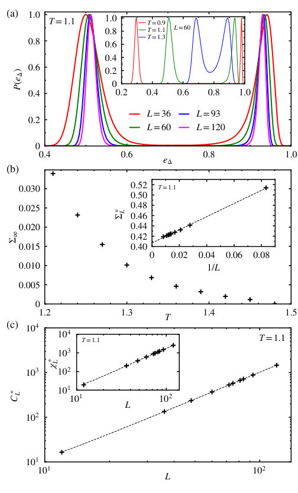
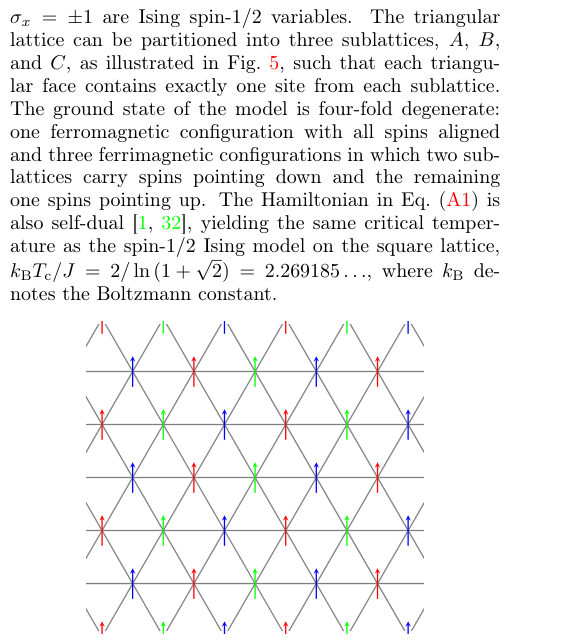
Summary. This paper investigates the phase transitions of the dilute spin-1 Baxter-Wu model. It demonstrates that the model breaks universality through continuously varying critical exponents and eventually transitions from a continuous to a first-order regime. These findings resolve previous debates about the existence of a multicritical point in this system.
Why it may be interesting. not directly relevant
Detailed structure
Main problem. The study aims to resolve long-standing ambiguities regarding the phase diagram and critical behavior of the dilute spin-1 Baxter-Wu model, specifically whether it exhibits a multicritical point or continuously varying critical exponents.
Main result. The researchers found evidence for universality breaking with continuously varying critical exponents and a crossover to a first-order transition regime at strong crystal fields, rather than a multicritical point.
Method. The study employs transfer-matrix calculations using the thick-restart Lanczos algorithm and large-scale Monte Carlo simulations, including multicanonical methods and finite-size scaling analysis.
Model / system. The spin-1 Baxter-Wu model on a triangular lattice, featuring three-spin ferromagnetic interactions and a crystal field parameter (Delta) that allows for a non-magnetic (spin-0) state.
Key observables. Central charge (c), scaling dimensions (x1, x4), effective critical exponents (eta, nu), energy probability density, and interfacial tension.
Important parameters / regimes. Exchange interaction (J), crystal field (Delta), temperature (T), and the spin-1/2 limit (Delta = -infinity).
Figures summary. The figures include a visual representation of the triangular lattice sublattices, Monte Carlo results for Delta=0, and a detailed summary of transition points and exponents in Table I.
Paper structure. The paper introduces the model and its historical ambiguity, describes the transfer-matrix and Monte Carlo methodologies, presents results regarding the phase diagram and universality breaking, and concludes with a consistent picture of the transition regimes.
Abstract
The critical behavior of the Baxter-Wu model belongs to the universality class of the four-state Potts model. While the introduction of annealed vacancies does not alter the criticality of the four-state Potts model, the dilute Baxter-Wu model has remained the subject of several competing scenarios. Here we investigate the phase diagram of the spin-$1$ Baxter-Wu model in the presence of a crystal field using transfer-matrix calculations and large-scale Monte Carlo simulations. Our results provide strong evidence for continuously varying critical exponents at finite dilution and reveal a crossover to first-order behavior. Along the line of continuous transitions, the central charge remains close to $c=1$, while the scaling dimensions systematically deviate from the spin-$1/2$ limit as the crystal field increases, eventually giving way to a first-order regime at strong fields. These findings resolve previous ambiguities and establish a consistent picture of the critical behavior of the dilute spin-$1$ Baxter-Wu model.
Do Hopfield Networks Dream of Stored Patterns? A Statistical-Mechanical Theory of Dreaming in Multidirectional Associative Memories
Authors: Adriano Barra, Fabrizio Durante, Andrea Ladiana, Michela Marra Solazzo
Type: theory · Category: disordered systems and neural networks · PDF: https://arxiv.org/pdf/2605.13721v1
Analysis basis: full PDF text, analyzed in chunks
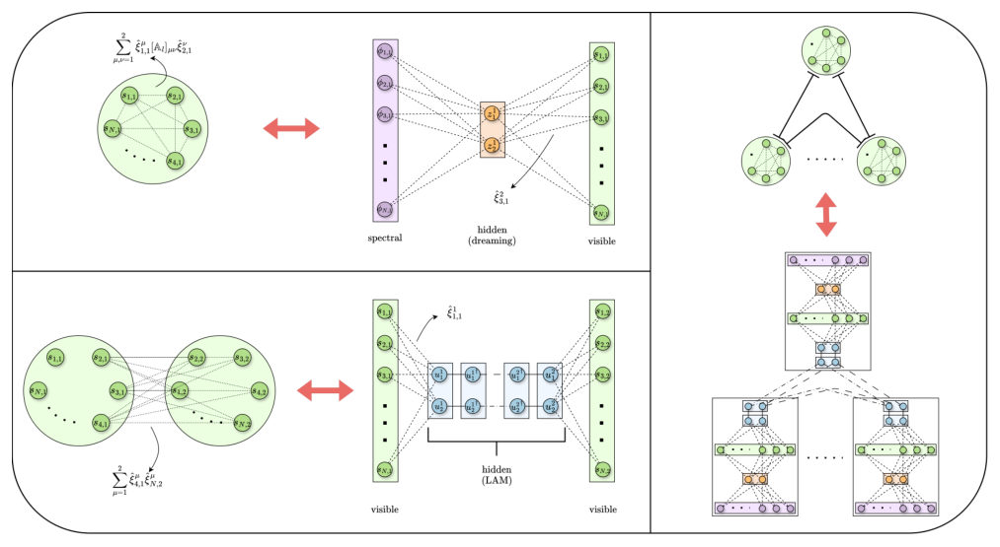
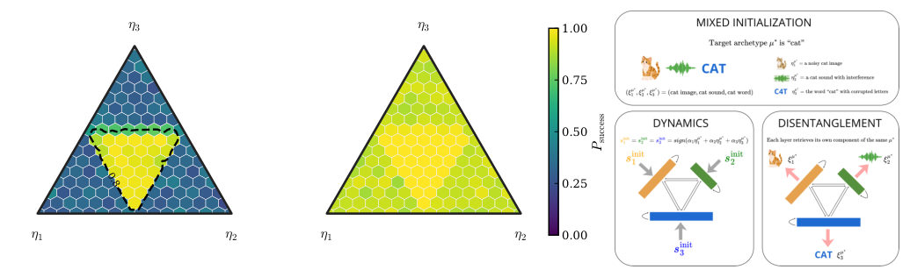
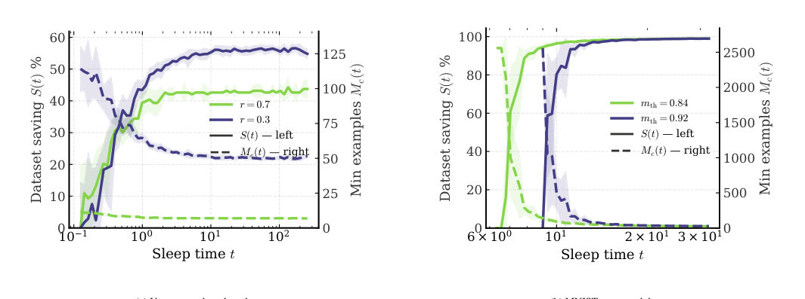
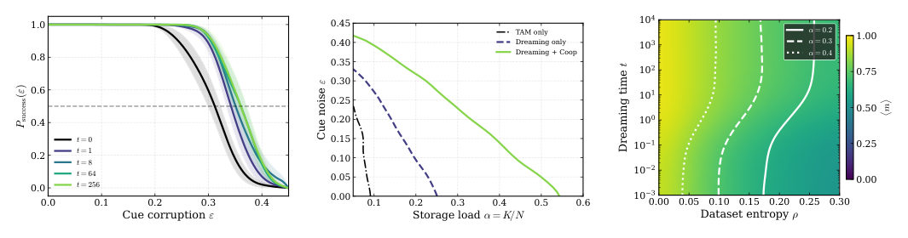
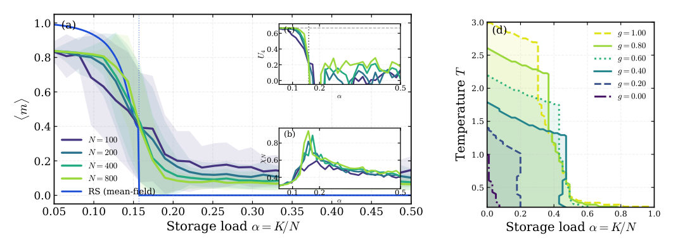
Summary. This paper proposes a theoretical framework for 'dreaming' in multi-layer neural networks, showing how offline processing can regularize memory and suppress interference. It proves that this mechanism enables the network to disentangle complex, multi-modal patterns and reduces the need for large training datasets.
Why it may be interesting. not directly relevant
Detailed structure
Main problem. Investigating the computational role of 'dreaming' (off-line synaptic adjustment) in multi-layer associative memories and its ability to perform pattern disentanglement and noise suppression.
Main result. The study demonstrates that dreaming and inter-layer coupling are synergistic, allowing the network to recover individual patterns from noisy, blended cues and showing that offline computation can substitute for additional training data.
Method. The authors use statistical mechanics, specifically the Replica Symmetric (RS) ansatz, the Guerra interpolation scheme, and the Hubbard-Stratonovich transformation to derive self-consistency equations, validated by Monte Carlo simulations.
Model / system. The Dreaming L-directional Associative Memory (DLAM) is a multi-layer Hebbian architecture within the framework of Energy-Based Models (EBMs), consisting of L interacting layers of binary neurons storing multimodal archetypes.
Key observables. Mattis magnetization (alignment with true archetypes), spin-glass overlap, Edwards-Anderson overlap, and the effective local field decomposition (signal, dreaming noise, and inter-layer noise).
Important parameters / regimes. Storage load (alpha), inverse temperature (beta), dataset entropy (rho), sleep time (t), and inter-layer coupling strength (g).
Assumptions / limitations. The theory assumes the validity of the Replica Symmetric (RS) ansatz and treats the dreaming process as a mathematical idealization of synaptic homeostasis.
Figures summary. Figure 1 illustrates the DLAM architecture and its integral representations; Figure 2 shows the joint success rate on the cue-weight simplex; Figure 3 presents phase diagrams and the data-computation trade-off.
Paper structure. The paper introduces the DLAM architecture, develops the statistical-mechanical RS theory using interpolation and linearization, analyzes the decoupling and reduction limits, and concludes with numerical validation of the disentanglement task and data-saving properties.
Abstract
We introduce the Dreaming $L$-directional Associative Memory (DLAM), a multi-layer Hebbian architecture in which off-line dreaming and supervised heteroassociative coupling coexist within a single energy function, placing our approach within the framework of energy-based models (EBMs). The replica-symmetric free energy, derived via the Guerra interpolation scheme, yields self-consistency equations governing the order parameters across the control-parameter space. The effective local field decomposes into signal, intra-layer dreaming noise, and inter-layer noise. Dreaming improves retrieval by differentially attenuating high-eigenvalue interference modes of the empirical correlation matrix, suppressing inter-pattern crosstalk while preserving the signal. Dreaming and inter-layer coupling prove synergistic, opening retrieval regions unreachable by either mechanism alone, as confirmed by Monte Carlo simulations for $L=3$. Their interplay is most pronounced on pattern disentanglement: given a mixture state as input, the network splits the constituent patterns one-per-layer, recovering each modality-specific pattern from a common cue that simultaneously blends noisy evidence from all sensory channels. Phase diagrams are planar projections of the hyperspace $(α,β,ρ,t)$-where $α$ is the storage load, $β$ the fast-noise inverse temperature, $ρ$ the dataset entropy, and $t$ the sleeping time. In the $(ρ,t)$-plane, the diagrams reveal a data-computation trade-off: off-line consolidation substitutes for additional training data, extending to heteroassociative architectures a phenomenon previously established for autoassociative networks. Enriching the standard Hopfield model with heteroassociativity and dreaming gives rise to EBMs capable of complex tasks beyond classical pattern recognition, contributing to a modern theory of neural information processing.
Empirical confirmation of bosonic wealth statistics in Bitcoin UTXOs
Authors: Chanhee Park, Claudio J. Tessone, Yu Zhang, Jeong-Hyuck Park
Type: both · Category: statistical mechanics · PDF: https://arxiv.org/pdf/2605.12853v1
Analysis basis: full PDF text, analyzed in chunks
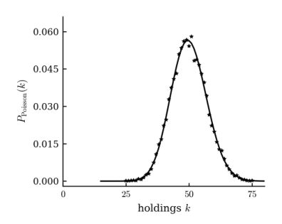
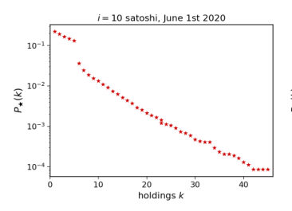
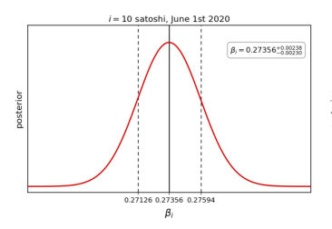
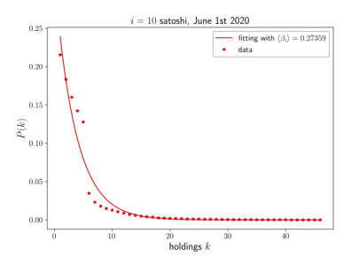
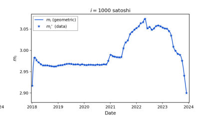
Summary. This paper demonstrates that Bitcoin wealth distribution follows bosonic (geometric) statistics due to the indistinguishable nature of digital units. This finding suggests that the transition from physical to digital money inherently drives higher wealth inequality through structural statistical mechanics.
Why it may be interesting. not directly relevant
Detailed structure
Main problem. Investigating whether the indistinguishable nature of digital assets (like Bitcoin) causes wealth to follow bosonic (geometric) statistics rather than classical (Poisson) statistics, and testing if this serves as a structural driver of inequality.
Main result. Bitcoin UTXO ownership distributions are empirically consistent with bosonic occupancy laws, showing a geometric distribution that accurately predicts wealth concentration across various denominations and time periods.
Method. The study uses Bayesian inference and Maximum Likelihood Estimation on Bitcoin blockchain data from 2018-2023, comparing empirical distributions against theoretical models using Jensen-Shannon divergence.
Model / system. The system is the Bitcoin UTXO set, modeled as a collection of indistinguishable (bosonic) wealth units. The authors use stochastic exchange models (wealth-to-receiver vs. sender-to-receiver) to represent classical and bosonic statistics.
Key observables. UTXO ownership distributions, Jensen-Shannon divergence, and the inverse-temperature parameter beta.
Important parameters / regimes. The inverse-temperature parameter beta (found to be in a narrow band [0.22, 0.46]) and the mean holdings m.
Assumptions / limitations. Digital assets are fundamentally indistinguishable; the analysis avoids address-clustering heuristics to focus on the raw ledger structure.
Figures summary. Figure 1 compares simulation results of Poisson vs. geometric exchange models; Figure 2 shows log-scale empirical distributions; Figure 5 shows temporal synchrony of empirical and theoretical means; Figure 6 quantifies distribution similarity via DJS.
Paper structure. The paper introduces the bosonic wealth hypothesis, presents simulation-based theoretical models, details the Bitcoin data extraction and statistical methodology, presents the empirical results and model comparisons, and concludes with implications for digital economies.
Abstract
Digitalisation transforms money from distinguishable physical objects into fungible informational units. A recent theoretical framework predicts that such indistinguishable wealth obeys bosonic occupancy statistics, leading to geometric ownership distributions and enhanced inequality. Using Bitcoin blockchain data, we test this prediction on 63 UTXO denominations across 72 monthly snapshots (2018--2023). A one-parameter geometric model describes the ownership distributions, reproducing both mean holdings and their temporal evolution; Jensen--Shannon divergence values lie below $0.08$ in $99.74\%$ of cases. The inferred inverse-temperature parameter satisfies the analytic mean--temperature relation to better than $0.1\%$ in every sample -- a self-consistency test that two-parameter alternatives cannot pass -- and remains within a narrow band across eight orders of magnitude in denomination and over six years. Bitcoin UTXO ownership statistics are therefore consistent with bosonic occupancy laws, suggesting that the informational nature of electronic money may act as a structural driver of inequality in digital economies.
Explicitly Correlated Gaussian Basis Approach to Periodic Systems
Authors: Kalman Varga
Type: theory · Category: numerical methods · PDF: https://arxiv.org/pdf/2605.12781v1
Analysis basis: full PDF text, analyzed in chunks
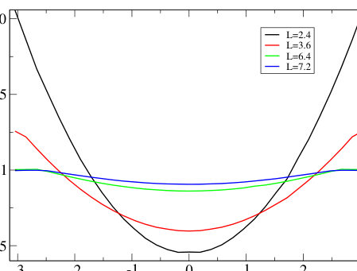
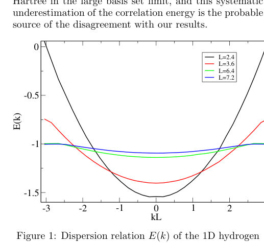
Summary. This paper introduces a new mathematical framework for applying Explicitly Correlated Gaussians to periodic solids. By deriving closed-form matrix elements and using an unfolding theorem, it enables efficient calculation of electronic band structures while accurately handling long-range Coulomb forces.
Why it may be interesting. It provides a highly accurate, analytically tractable method for capturing explicit electron correlation in periodic systems, which is a significant challenge in many-body electronic structure theory.
Detailed structure
Main problem. Developing an analytically tractable framework for calculating the electronic band structure of periodic solids using Explicitly Correlated Gaussian (ECG) basis functions, specifically addressing the convergence of long-range Coulomb interactions.
Main result. The derivation of closed-form expressions for all required matrix elements (overlap, kinetic, and Coulomb) and the establishment of a generalized unfolding theorem that reduces double lattice sums to single sums.
Method. The use of periodized Shifted Correlated Gaussians (SCGs) combined with Ewald summation, direct neutral-shell sums, and a Poisson-based dual-space representation to handle long-range interactions.
Model / system. Periodic electronic systems (solids) under periodic boundary conditions, specifically validated using an infinite one-dimensional hydrogen chain with a Hamiltonian including kinetic energy and electron-nuclear/electron-electron Coulomb interactions.
Key observables. Electronic band structure E(kB), ground-state energy per atom, pair-correlation function, and electron-electron coalescence densities.
Important parameters / regimes. Lattice vectors (L), Ewald splitting parameter (kappa), correlation matrix (Ak), and Bloch wave vector (kB).
Assumptions / limitations. The Born-Oppenheimer approximation (fixed nuclei) is assumed, and the system is assumed to have orthorhombic symmetry.
Figures summary. The paper includes a table comparing ground-state energies of the 1D hydrogen chain against established benchmarks from finite-chain and VMC methods.
Paper structure. The paper defines the periodic Hamiltonian and basis functions, presents the derivation of closed-form matrix elements, introduces the unfolding theorem, and validates the framework using a 1D hydrogen chain.
Abstract
Closed-form expressions for all matrix elements required for variational calculation of the electronic structure of periodic solids have been derived using a basis of explicitly correlated Gaussians (ECGs). Periodic basis functions are constructed by summing shifted correlated Gaussians over all composite lattice translations, where a generalized unfolding theorem reduces the resulting double lattice sum to a single sum through a unified computational framework for overlap, kinetic energy, and Coulomb potential operators. The formalism has been validated through application to an infinite one-dimensional hydrogen chain, where the ground-state energy per atom computed in the thermodynamic limit is shown to agree with finite-chain results extrapolated by other many-body methods.
Fluctuation-Dissipation Framework for Size-Dependent Surface Tension
Authors: Sergii Burian, Yevhenii Shportun, Liudmyla Klochko, Leonid Bulavin, Dmytro Gavryushenko, Mykola Isaiev
Type: both · Category: statistical mechanics · PDF: https://arxiv.org/pdf/2605.13244v1
Analysis basis: full PDF text, analyzed in chunks
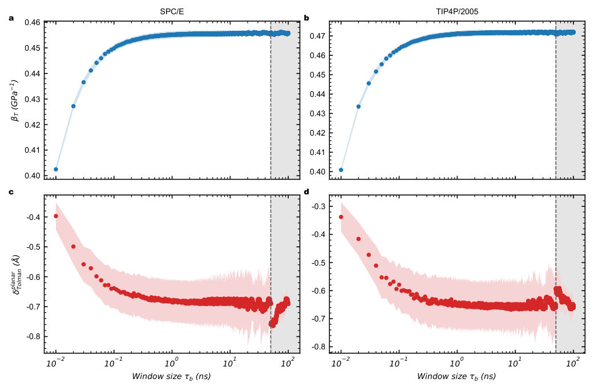
Summary. This paper provides a new way to calculate the curvature-dependent part of surface tension using only bulk properties of a liquid. By relating the Tolman length to volume fluctuations, it allows researchers to study nanoscale interface effects using standard bulk simulations instead of complex two-phase models.
Why it may be interesting. not directly relevant
Detailed structure
Main problem. Determining the Tolman length, which is the first curvature correction to size-dependent surface tension at the nanoscale, without needing to resolve explicit liquid-vapor interfaces.
Main result. The authors derive a framework relating the planar-limit Tolman length to bulk thermodynamic response properties, specifically the isothermal compressibility and its pressure derivative, and validate it using MD simulations and industrial water formulations.
Method. Development of a thermodynamic and statistical-mechanical framework using density-based expansions of the capillary-chemical balance, combined with molecular dynamics simulations (SPC/E and TIP4P/2005 models) and analytical evaluation using IAPWS-IF97.
Model / system. One-component, weakly compressible liquids near liquid-vapor coexistence, with a specific focus on water at ambient temperatures.
Key observables. Tolman length (delta_Tolman), isothermal compressibility (beta_T), pressure derivative of compressibility (beta'_T), and volume distribution moments (m2, m3).
Important parameters / regimes. Nanoscale regimes (nanometric radii), liquid-vapor coexistence, and the weakly compressible regime.
Assumptions / limitations. The framework assumes the liquid is weakly compressible and that the density-based expansion remains controlled; it may fail near critical or spinodal points.
Figures summary. Figure 1 shows convergence of the Tolman length with block window size; Figure 2 shows temperature dependence; Figure 4 and 5 demonstrate the validity of the density-based expansion truncation; Figure 6 shows the stability of the expansion hierarchy via a ratio of expansion sectors.
Paper structure. The paper begins by defining the problem of the Tolman length, develops a density-based thermodynamic framework for curved interfaces, compares different expansion formulations, validates the hierarchy of terms for water, and concludes with MD simulation results and comparison to industrial water data.
Abstract
The size-dependent liquid-vapor surface tension controls phase change, wetting, and transport at nanoscales, yet its first curvature correction, the Tolman length, remains difficult to determine. We develop a thermodynamic and statistical-mechanical framework that relates this correction to bulk response properties of a one-component liquid near liquid-vapor coexistence. For curved interfaces, the analysis considers two local formulations of the same capillary-chemical balance, in excess pressures and in relative density deviations. For weakly compressible liquids in the regime emphasized here, the adopted asymmetric density-based formulation is the practically relevant one, with finite-curvature effects entering through vapor supersaturation under capillary equilibrium. At coexistence, the planar-limit value of the same Tolman length reduces to a combination of the liquid isothermal compressibility and its pressure derivative and can be recast as a bulk fluctuation-response observable of the homogeneous liquid in the isothermal-isobaric ensemble. In this representation, the planar-limit coefficient is determined by second and third central moments of the volume distribution, equivalently by the pressure response of the relative fluctuation width. For water, homogeneous (N,P,T) simulations of SPC/E and TIP4P/2005 sample the bulk liquid, not an explicit liquid-vapor interface, and yield estimates near -0.7 Angstrom at 300 K. An independent evaluation based on the IAPWS-IF97 industrial formulation gives -0.713 +/- 0.004 Angstrom at the same coexistence state and predicts a weakly nonmonotonic temperature dependence along coexistence. Beyond water, the framework applies to other one-component liquids in regimes where an accurate thermal equation of state or sufficiently converged bulk volume statistics are available.
Frustrated Magnetism of the $S = 1$ Trillium-Lattice Oxide Li$_2$NiGe$_3$O$_8$
Authors: Yuya Haraguchi
Type: experiment · Category: strongly correlated electrons · PDF: https://arxiv.org/pdf/2605.12962v1
Analysis basis: full PDF text, analyzed in chunks
Summary. This paper characterizes the magnetic properties of the S=1 trillium-lattice oxide Li2NiGe3O8. It demonstrates that the material exhibits strong magnetic frustration without long-range order, serving as a bridge between Heisenberg and spin-ice magnetic models.
Why it may be interesting. not directly relevant
Detailed structure
Main problem. Investigating the nature of magnetic frustration and the underlying magnetic regime (Heisenberg-like vs. spin-ice-like) in the S=1 trillium-lattice oxide Li2NiGe3O8.
Main result. The study identifies Li2NiGe3O8 as a rare S=1 single-trillium oxide with frustrated correlations, positioning it as an experimental platform for studying the transition between Heisenberg and spin-ice-like regimes.
Method. The researchers used powder X-ray diffraction for structural characterization, DC magnetometry for susceptibility and magnetization, and relaxation calorimetry for heat capacity, comparing results to Monte Carlo simulations.
Model / system. The system is an insulating ordered-spinel oxide, Li2NiGe3O8, featuring a 3D chiral trillium lattice formed by a single network of S=1 Ni2+ ions.
Key observables. Effective magnetic moment (mu_eff), Weiss temperature (theta_W), magnetic heat capacity (C_mag/T), and magnetic entropy.
Important parameters / regimes. Effective magnetic moment of 3.124(4) mu_B, Weiss temperature of -0.21(1) K, and a characteristic energy scale J of approximately 7 K.
Assumptions / limitations. The study assumes the lattice contribution to heat capacity can be modeled using Debye and Einstein models and uses a local ferromagnetic Ising model as a theoretical benchmark.
Figures summary. Figure 1(a) provides a schematic of the Ni-sublattice.
Paper structure. The paper begins with structural characterization via XRD, followed by magnetic susceptibility and magnetization measurements, then heat capacity analysis, and concludes with a comparison of experimental data to Monte Carlo simulations of the Ising model.
Abstract
We report magnetization and heat-capacity measurements on the ordered-spinel oxide Li$_2$NiGe$_3$O$_8$, where Ni$^{2+}$ ions with $S = 1$ form a single three-dimensional trillium lattice. Powder x-ray diffraction confirms a cubic ordered-spinel structure with space group $P4_{1}32$ or $P4_{3}32$. The inverse susceptibility $H/M$ follows Curie--Weiss behavior above 50 K with an effective magnetic moment $μ_{\mathrm{eff}} = 3.124(4)\,μ_{\mathrm{B}}$ per Ni and a Weiss temperature $θ_{\mathrm{W}} = -0.21(1)$ K, but deviates smoothly below about 10 K. The magnetic heat capacity $C_{\mathrm{mag}}/T$ shows a broad maximum near 3 K with a wide tail to about 10 K, and the entropy recovered between 2 and 40 K is about 88% of $R \ln 3$. The broad heat-capacity maximum is compared with Monte Carlo results for the local ferromagnetic Ising model on the trillium lattice using a characteristic scale $J$ of order 7 K, while the inverse susceptibility shows only qualitative similarity to the theoretical curve. These results establish Li$_2$NiGe$_3$O$_8$ as a rare $S = 1$ single-trillium oxide with frustrated magnetic correlations. The present data provide an experimental platform for discussing the relation between Heisenberg-like and spin-ice-like regimes on the trillium lattice.
Imaging Interacting Two-Dimensional Anisotropic Electrons
Authors: Ziyu Xiang, Jianghan Xiao, Hongyuan Li, Woochang Kim, Tianle Wang, Zhihuan Dong, Takashi Taniguchi, Kenji Watanabe, Michael P. Zaletel, Steven G. Louie, Michael F. Crommie, Feng Wang
Type: experiment · Category: strongly correlated electrons · PDF: https://arxiv.org/pdf/2605.12761v1
Analysis basis: full PDF text, analyzed in chunks
Summary. This paper reports the direct imaging of an oblique Wigner crystal in monolayer ReSe2 using scanning tunneling microscopy. It demonstrates that mass anisotropy leads to a unique 1D melting process, resulting in a smectic electron liquid crystal phase. This work provides a new platform for studying anisotropic correlated electron physics.
Why it may be interesting. The observation of a directional, one-dimensional quantum melting process and the emergence of a smectic liquid crystal phase provides a real-space platform for studying anisotropic many-body dynamics and exotic correlated phases.
Detailed structure
Main problem. The study aims to visualize and understand the physics of 2D anisotropic Wigner crystals and their unique quantum melting process driven by effective-mass anisotropy.
Main result. The researchers discovered that electrons in monolayer ReSe2 form an oblique Wigner crystal that undergoes one-dimensional quantum melting into a smectic liquid crystal phase as density increases.
Method. Non-invasive scanning tunneling microscopy (STM) was used to image electron density profiles, combined with density functional theory (DFT) for theoretical validation.
Model / system. The system is a monolayer of 1T-ReSe2, a 2D van der Waals material with intrinsic in-plane electron effective-mass anisotropy, placed in a gate-tunable heterostructure.
Key observables. Electron wavefunction shape (aspect ratio), mass anisotropy ratio (m_h/m_l), lattice structure (oblique vs. triangular), and electron density (n).
Important parameters / regimes. Electron density range of 3.1e12 to 6.6e12 cm^-2, mass anisotropy ratio of approximately 8.4, and Wigner-Seitz radii (r_sl and r_sh).
Assumptions / limitations. The analysis assumes a 2D Gaussian model for fitting individual electron density profiles.
Figures summary. Fig 1 shows the experimental setup, device architecture, and atomic-resolution STM topography. Fig 2 presents tunnel current maps, FFT power spectra, and Gaussian fits of electron shapes compared to DFT predictions. Fig 3 illustrates the transition between the Wigner crystal and smectic phases.
Paper structure. The paper begins with the experimental setup and material characterization, moves to the demonstration of electron shape anisotropy and mass anisotropy, then details the discovery of the oblique Wigner lattice, and concludes with the observation of the anisotropic quantum melting into a smectic phase.
Abstract
We directly visualize a two-dimensional anisotropic Wigner crystal and its quantum melting in monolayer 1T-ReSe2 using non-invasive scanning tunnelling microscopy. In crystals with anisotropic effective mass, an electron's quantum wavefunction becomes elongated along the light-mass direction to reduce kinetic energy. At low electron density, such anisotropic electrons are predicted to form an oblique Wigner crystal rather than the familiar triangular lattice of isotropic systems. Despite longstanding theoretical interest, this physics has been little explored experimentally. Here we first image the anisotropic shape of individual electrons in gated monolayer ReSe2, whose wavefunctions are strongly elongated along the light-mass direction. At low density, these electrons crystallize into an oblique Wigner lattice. As the density increases, quantum fluctuations grow more rapidly along the light-mass direction than along the heavy-mass direction, driving a one-dimensional melting of the crystal. The resulting state retains order along one direction but melts along the other, consistent with a smectic electron liquid crystal between the electron solid and Fermi liquid phases. Our work establishes monolayer ReSe2 as a platform for studying anisotropic correlated electrons, quantum melting, and coupled one-dimensional electron chains.
In-situ tunable superconducting diode: towards field-free operation with infinite nonreciprocity
Authors: Razmik A. Hovhannisyan, Taras Golod, Amirreza Lotfian, Vladimir M. Krasnov
Type: both · Category: other · PDF: https://arxiv.org/pdf/2605.13254v1
Analysis basis: full PDF text, analyzed in chunks

Summary. This paper presents a method to create highly tunable superconducting diodes using a four-terminal junction geometry that eliminates the need for external magnetic fields. By using asymmetric current injection and temperature control, the authors achieved extreme nonreciprocity and even demonstrated the potential for using these devices as 'Gauss neurons' in neuromorphic computing.
Why it may be interesting. not directly relevant
Detailed structure
Main problem. The challenge of creating efficient, scalable, and magnetic-field-free superconducting diodes (ScDs) that offer broad-range in-situ tunability for applications in superconducting electronics and neuromorphic computing.
Main result. The researchers demonstrated four-terminal niobium Josephson junctions that achieve near-infinite nonreciprocity (A > 1000) and field-free operation through asymmetric current injection and temperature tuning.
Method. The study uses experimental measurements of I-V characteristics and Ic(H) patterns alongside numerical simulations using a one-dimensional sine-Gordon model to analyze self-field effects.
Model / system. The physical platform consists of X-shaped, four-terminal planar niobium Josephson junctions utilizing the self-field effect to break time-reversal symmetry without external magnetic fields.
Key observables. Nonreciprocity ratio (A), critical current (Ic) as a function of magnetic field (H), voltage-current (I-V) characteristics, and AC-current rectification.
Important parameters / regimes. Nonreciprocity (A), self-field inductance (Lsf), junction width (Wx), critical current density (Jc), and the short-junction limit (Wx < 4 lambda_J).
Assumptions / limitations. The system is modeled in the overdamped regime with a low-frequency AC-bias.
Figures summary. Figure 1 shows device SEM images and calculated Ic(H) patterns; Figure 2 presents high-precision lock-in measurements and simulations of dynamic rectification; Figure 3 details the self-flux calculations and tuning modes.
Paper structure. The paper introduces the problem of ScD tunability, describes the four-terminal Nb junction architecture, presents experimental results on temperature-driven tuning and field-free operation, and concludes with the implications for neuromorphic computing.
Abstract
Efficient, scalable, and magnetic-field-free superconducting diodes are essential for future superconducting electronics; yet, despite significant efforts, such practical devices remain unrealized. The main challenge lies in achieving broad-range in-situ tunability, both for optimization and for achieving transistor-like operation. Here, we study diodes based on four-terminal niobium planar Josephson junctions. We show that the multiterminal structure eliminates the need for an external magnetic field and enables essentially unrestricted in-situ tunability, along with reconfigurability of the diode polarity, leading to new functionality. For example, we demonstrate that such diodes can operate as Gauss neurons via reentrant superconductivity. By deliberately tuning the junction parameters, we obtain effectively infinite nonreciprocity (within experimental resolution) leading to threshold-free ac-current rectification. Such technologically simple, reconfigurable, and broadly tunable diodes could be instrumental for future digital and neuromorphic computing.
Incommensurate Spin-Density Waves in a Frustrated Maple-Leaf Lattice Ferromagnet
Authors: Paul L. Ebert, Yasir Iqbal, Alexander Wietek
Type: theory · Category: strongly correlated electrons · PDF: https://arxiv.org/pdf/2605.12592v1
Analysis basis: full PDF text, analyzed in chunks
Summary. This paper maps the magnetic phase diagram of the frustrated maple-leaf lattice Heisenberg model. It discovers an incommensurate spin-density-wave phase near the ferromagnetic boundary and identifies a potential Z2 quantum spin liquid on the ruby-lattice limit. The results provide theoretical context for understanding the magnetism in materials like Na2Mn3O7.
Why it may be interesting. not directly relevant
Detailed structure
Main problem. The study investigates the breakdown of ferromagnetism and the phase diagram of a frustrated spin-1/2 Heisenberg model on the maple-leaf lattice, specifically testing for spin-nematic and dimerized hexagonal-singlet phases.
Main result. The authors find an extended regime of incommensurate spin-density-wave correlations near the ferromagnetic boundary instead of a spin-nematic phase, and identify a gapped Z2 quantum spin liquid candidate on the ruby-lattice boundary.
Method. The researchers used Exact Diagonalization (ED) on clusters up to 42 sites, Tower-of-States analysis, and Variational Monte Carlo (VMC) with Gutzwiller-projected fermionic Ansätze.
Model / system. A spin-1/2 nearest-neighbor Heisenberg model on a maple-leaf lattice (a site-depleted triangular lattice) with ferromagnetic couplings (Jt, Jd) and antiferromagnetic coupling (Jh).
Key observables. Spin-spin correlators, staggered magnetization, hexagonal singlet correlator, structure factor S(q), and two-magnon interaction energy (Delta2).
Important parameters / regimes. Exchange couplings Jt, Jh, and Jd; specifically the ruby-lattice limit (Jd = 0) and the ternary normalization |Jt| + Jh + |Jd| = 1.
Assumptions / limitations. The mapping of the S=3/2 material Na2Mn3O7 to the S=1/2 model assumes an averaging of nine nearest-neighbor interactions into three effective couplings.
Figures summary. Figure 1 illustrates the maple-leaf lattice; Figure 4 shows ground state correlators on a 36-site cluster; supplemental figures include heatmaps of two-magnon interactions and tower-of-states plots.
Paper structure. The paper introduces the maple-leaf lattice and its motivation from real materials, describes the Hamiltonian and numerical methods (ED and VMC), presents the phase diagram and identification of the SDW regime, discusses the absence of spin-nematicity, and concludes with connections to the ruby lattice and experimental materials.
Abstract
We study how ferromagnetism breaks down in the spin-$\tfrac12$ nearest-neighbor Heisenberg model on the maple-leaf lattice with ferromagnetic $J_t,J_d$ and antiferromagnetic $J_h$, motivated by the mixed ferro-antiferromagnetic interactions in Na$_2$Mn$_3$O$_7$. Exact diagonalization shows that the ferromagnetic boundary does not feature a zero-field spin-nematic phase on the clusters studied here, but an extended regime of incommensurate spin-density-wave correlations with continuously evolving ordering vector. The phase diagram also contains collinear Néel, canted $120^\circ$, and hexagonal-singlet regimes, separated by regions that remain difficult to classify from exact diagonalization alone. Variational tests of fully symmetric Gutzwiller-projected Abrikosov-fermion U(1) and $\mathbb{Z}_2$ states find no competitive spin-liquid description of the interior unresolved regions. By contrast, on the ruby-lattice boundary we identify a point between the collinear Néel and hexagonal-singlet phases where a projected $\mathbb{Z}_2$ Ansatz reproduces the finite-size energy and spin correlations with good accuracy.
Lattice Gauging Interfaces and Noninvertible Defects in Higher Dimensions
Authors: David Hofmeier, Giovanna Pimenta, Weiguang Cao
Type: theory · Category: other · PDF: https://arxiv.org/pdf/2605.12601v1
Analysis basis: full PDF text, analyzed in chunks
Summary. This paper provides a new lattice-based method for studying topological interfaces and non-invertible defects in higher dimensions using movement operators. It demonstrates how to handle the complex constraints of gauging interfaces and uses these tools to identify mixed 't Hooft anomalies through symmetry fractionalization.
Why it may be interesting. not directly relevant
Detailed structure
Main problem. Developing an explicit lattice framework to study gauging interfaces and their non-invertible defect descendants in higher dimensions, specifically addressing the difficulty of changing Hilbert space constraints.
Main result. The authors introduce movement operators that transport interface Hamiltonians and constraints on a common unconstrained Hilbert space, providing a way to reconstruct the gauging map and diagnose mixed anomalies via symmetry fractionalization.
Method. The study uses lattice gauging maps, the construction of movement operators to shift interface boundaries, and the analysis of condensation defects and fusion rules in (2+1)d and (3+1)d.
Model / system. Lattice models with generalized symmetries, including the Transverse-Field Ising Model (TFIM) and Z2 lattice gauge theory in (2+1)d and (3+1)d, as well as Z4 symmetric models.
Key observables. Wilson loops, twist operators, Gauss operators, and symmetry fractionalization on condensation defects.
Important parameters / regimes. The coupling constant g in the TFIM and Z2 gauge theory, which determines the duality (Wegner duality).
Assumptions / limitations. The construction assumes Abelian groups and that Z2 twist-measuring operators are trivial for all contractible loops to ensure topological nature.
Figures summary. Figure 1 shows the duality interface separating different symmetry regions; Figure 2 shows the local action of the gauging map; Figure 3 depicts the interface structure; Figure 14/15 illustrate symmetry fractionalization and local lattice movements.
Paper structure. The paper progresses from constructing (2+1)d gauging interfaces to analyzing condensation defects, then extends the framework to (3+1)d higher-form symmetries, and concludes with subgroup gauging and mixed anomaly diagnostics.
Abstract
We study gauging interfaces and their defect descendants in lattice models with generalized symmetries in higher dimensions. We construct explicit interface Hamiltonians for gauging a $\mathbb Z_2^{(0)}$ symmetry in $(2+1)d$ and a $\mathbb Z_2^{(1)}$ symmetry in $(3+1)d$. In higher dimensions, and especially in the presence of higher-form symmetries, the topological nature of gauging interfaces is obscured by the fact that the constrained Hilbert space depends on the location of the interface. We resolve this by introducing movement operators acting on a common unconstrained Hilbert space, which transport both the interface Hamiltonians and the associated constraints. As applications, we analyze condensation defects obtained from finite-region gauging and reconstruct the gauging map from movement operators. Finally, we apply the same framework to subgroup gauging, focusing on the example of gauging $\mathbb Z_2\subset \mathbb Z_4$. This produces a dual symmetry carrying a mixed anomaly, which we diagnose on the lattice through symmetry fractionalization on condensation defects. Our results provide an explicit lattice framework for studying topological interfaces, condensation defects, and the associated anomalies arising from gauging in higher-dimensional systems.
Magnetic fields in monoclinic $α$-RuCl$_3$ reveal rhombohedral inclusions underlying apparent oscillations
Authors: Hamza Nasir Daniel Balazs, Muhammad Nauman, Ezekiel Horsley, Subin Kim, Young-June Kim, K. A. Modic
Type: experiment · Category: strongly correlated electrons · PDF: https://arxiv.org/pdf/2605.13444v1
Analysis basis: full PDF text, analyzed in chunks


Summary. This paper demonstrates that the apparent quantum oscillations in alpha-RuCl3, once thought to be evidence for a spinon Fermi surface, are actually caused by structural impurities. By isolating a pure monoclinic phase, the authors show that the magnetic response is dominated by overlapping phase boundaries from coexisting structural domains.
Why it may be interesting. not directly relevant
Detailed structure
Main problem. Determining whether field-induced magnetic oscillations in alpha-RuCl3 are intrinsic signatures of a Kitaev quantum spin liquid or artifacts caused by structural rhombohedral inclusions.
Main result. The study shows that previously observed 'oscillatory' features are actually due to multiple magnetic phase boundaries arising from the coexistence of monoclinic and rhombohedral structural domains, rather than a spinon Fermi surface.
Method. The researchers used resonant torsion magnetometry on nanogram-scale crystals, single-crystal X-ray diffraction, and vibrating sample magnetometry to map the magnetic phase diagram and structural symmetry.
Model / system. The physical system is alpha-RuCl3, a layered honeycomb magnet and candidate Kitaev quantum spin liquid, which exhibits a transition between monoclinic (C2/m) and rhombohedral (R-bar 3) crystal structures.
Key observables. Magnetotropic susceptibility (kappa), magnetic susceptibility (chi), Neel temperature (TN), and critical magnetic fields (Bc1, Bc2).
Important parameters / regimes. Temperature (1.5 K to 300 K), magnetic field strength (up to 14 T), and field orientation (angles relative to the c* axis).
Assumptions / limitations. The study assumes that the observed rhombohedral signatures in the magnetic response are due to small residual fractions of stacking defects within an otherwise monoclinic crystal.
Figures summary. Figures include the monoclinic crystal structure, reciprocal-space mapping (RSM) showing twinning, temperature-dependent susceptibility with hysteresis, and T-B phase diagrams showing the shift in boundaries between structural phases.
Paper structure. The paper introduces the structural controversy in alpha-RuCl3, details the experimental setup for nanogram-scale magnetometry, presents structural characterization via XRD, maps the magnetic phase diagram of the monoclinic phase, and concludes by attributing observed oscillations to structural inclusions.
Abstract
The majority of research on $α$-RuCl$_3$ has focused on applying in-plane magnetic fields to suppress antiferromagnetic order and induce a quantum spin liquid (QSL). However, this effort has been complicated by the materials temperature-dependent crystal structure and sensitivity to strain-induced stacking disorder, making interpretation of field-induced phenomena contentious. The crystal structure of $α$-RuCl$_3$ has recently been clarified as a function of temperature and sample size, motivating a reassessment of its magnetic properties and connection to proposed spin-liquid signatures. Here, we show that the monoclinic structure can be isolated in nanogram-scale crystals, enabling the study of Kitaev physics in a new regime. We focus on a structurally well-defined monoclinic crystal at low temperature and perform high-resolution magnetotropic susceptibility measurements in several crystal planes. Mapping the AFM phase boundary versus temperature, field, and orientation, we find the monoclinic phase diagram closely resembles rhombohedral crystals but is systematically shifted to higher transition temperatures and critical fields. For $B \parallel a$, we observe a two-step suppression of AFM order, indicating an intermediate ordered phase analogous to the ZZ2 phase reported in rhombohedral samples. Our results show that transitions previously observed beyond the AFM regime under in-plane fields arise from multiple shifted AFM phase boundaries associated with monoclinic inclusions, rather than non-magnetic phases. These findings indicate that features attributed to a QSL are instead due to an incomplete transition from the high-temperature monoclinic to the low-temperature rhombohedral structure. They also highlight the role of structural symmetry and sample homogeneity in interpreting field-induced phenomena in $α$-RuCl$_3$ and related two-dimensional quantum magnets.
Multiband Superconductivity in the Exactly Solvable Hatsugai-Kohmoto Model
Authors: Nico Hahn, R. Matthias Geilhufe
Type: theory · Category: strongly correlated electrons · PDF: https://arxiv.org/pdf/2605.13259v1
Analysis basis: full PDF text, analyzed in chunks

Summary. This paper provides a systematic framework for studying multiband superconductivity in the exactly solvable orbital Hatsugai-Kohmoto model. It demonstrates how strong correlations can drive a change in the order of the superconducting phase transition and how orbital degrees of freedom influence pairing symmetry.
Why it may be interesting. not directly relevant
Detailed structure
Main problem. The study aims to classify symmetry-allowed superconducting gap structures and explore the interplay between strong correlations, orbital structure, and pairing symmetry in a multiband system.
Main result. The authors establish a framework for analyzing superconductivity in the orbital Hatsugai-Kohmoto model, finding that the phase transition shifts from second-order to first-order in the Mott regime and that Tc is maximized at a finite interaction strength.
Method. A mean-field treatment combined with exact diagonalization of momentum-local Hamiltonians and group theory (using GTPack) to classify pairing symmetries under the D4h point group.
Model / system. A two-orbital extension of the Hatsugai-Kohmoto model on a square lattice, featuring p-orbitals with nearest- and second-nearest-neighbor hopping and momentum-local, orbital-independent interactions.
Key observables. Superconducting gap structures, critical temperature (Tc), superconducting order parameter, Mott gap, and free-energy landscapes.
Important parameters / regimes. Interaction strength (U), pairing strength (g), hopping integrals (sigma and pi components), and the Mott transition regime.
Assumptions / limitations. The Bloch Hamiltonian is assumed to be spin-degenerate (no spin-orbit coupling), and the interaction is assumed to be isotropic and orbital-independent.
Figures summary. Figure 1 shows the Mott gap and free-energy landscapes illustrating the change in transition order; Figure 4 illustrates p-orbital hopping processes and the resulting band structure.
Paper structure. The paper progresses from introducing the multiband HK model and its symmetry classification to performing numerical mean-field calculations of observables, followed by an analysis of the phase transition nature and an appendix on the tight-binding model construction.
Abstract
Multiband superconductivity gives rise to a rich landscape of possible pairing states. Here we study superconductivity in the multiband extension of the Hatsugai-Kohmoto model, an exactly solvable model of correlated electrons with momentum-local interactions, which provides a minimal framework to explore the interplay of strong correlations, orbital structure and pairing symmetry. Focusing on a two-orbital system with point-group symmetry $\rm D_{4h}$, we classify the symmetry-allowed superconducting gap structures, taking into account spin, orbital and momentum degrees of freedom. We further compute the critical temperature and the superconducting order parameter for selected pairing channels as functions of interaction and pairing strength within a mean-field treatment. Our results provide a systematic framework for analyzing superconductivity in the orbital Hatsugai-Kohmoto model and extend symmetry-based approaches to correlated multiband settings.
← Index · ← Previous · Next →